What If Network
“The most dangerous phrase in the language is, ‘We’ve always done it this way.’” - Grace Hopper
My "What If" Adventures

What if I chose the unpaved road?
When taking a vacation to the Bahamas, most people imagine sunbathing on the white sandy beach or swimming in the clear blue water, what if I instead decide to just start walking up the hill and see where nature takes me? Read more
When taking a vacation to the Bahamas, most people imagine sunbathing on the white sandy beach or swimming in the clear blue water, what if I instead decide to just start walking up the hill and see where nature takes me?
That is exactly what I did when I went to a small resort island called Half Moon Cay, Bahamas on December 2023. The water temperature was very cold in December so instead of suffering through the uncomfortable water, I decided to venture on a solo hike around the island.
About 10 minutes into the hike, I came across a curved path. Most people would continue the trail toward the right, but a spontaneous thought popped into my mind. What if I chose to walk on the rocky path?
Onward I went, stepping over rock pebbles and broken branches, excited to discover what lies on the other side.
I walked and walked with nothing except for a water bottle and a black hat. After 40 minutes of climbing over boulders, up and down several hills, and slipping through narrow tree openings, I finally reached the end of the rocky road.
I spent a brief moment to admire the incredible view of the blue sea from above and, revitalized with my personal achievement of hiking through uncharted grounds, I was ready to turn back and reunite with my family tanning on the beach below. What I saw next was something that noone could have ever predicted.
The moment I turned around to walk back, no doubt curious by my unusual presence on the unpaved path, a baby goat trodded barely 50 feet away. As I came closer, I bent down to be within 6 feet of the baby goat looking inquisitively at me. Unfortunately, I did not have any food to offer him but I will be sure to bring some trail mix on every nature hikes from now on.
Coming down from the hike, I did not expect to find an even rarer discovery. What I thought was just a beautiful shell turned out to be the home of a young hermit crab with a surprisingly very sturdy grip. And what a fitting theme to this story. A hermit crab isn't afraid to try on new shells as they grow. Let us all live in the same way and turn the What if into What we did"

What if I was homeless for 100 hours?
Traveling to another state for 5 days sounds fun... but is it still fun if you did not have a place to sleep? What if I did that on purpose to see if it was possible to live on only the kindness of completely strangers? Read more
 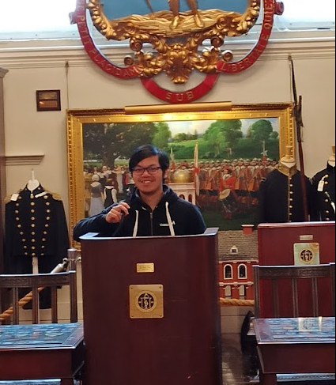
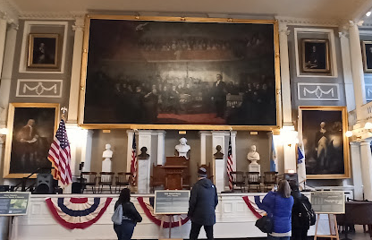
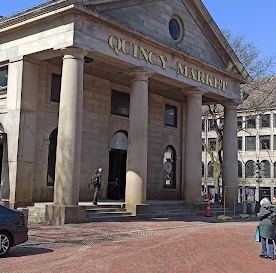
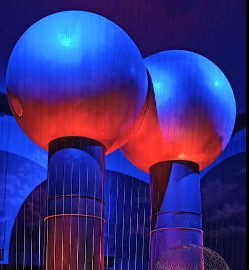
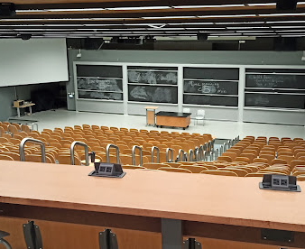
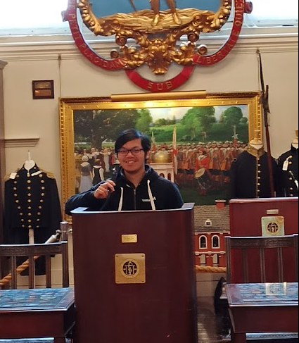
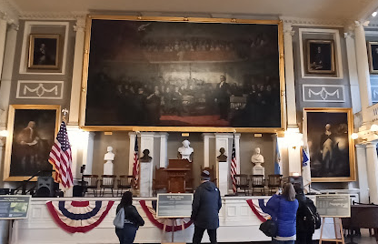
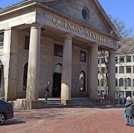
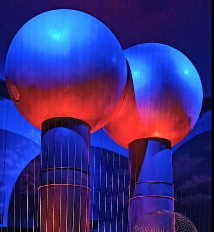
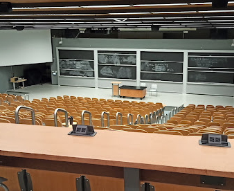
Traveling to another state for 5 days sounds fun... but is it still fun if you did not have a place to sleep? What if I did that on purpose to see if it was possible to live on only the kindness of completely strangers?
That is exactly what I did when I flew to Boston, Massachusetts without booking any place to sleep. At the time, I was enchanted by a YouTube channel called Yes Theory that had attempted to ask strangers if they could sleep in their house, capitalizing on the group members' charisma and the kindness of strangers. I figured that this was the perfect excuse to attempt living on nothing.
Before arriving in Boston, with my goal of relying on the kindness of strangers for a place to sleep, I had initially thought that were my approaches to fail, I would be able to find a quiet corner on a secluded street to lay down and rest for a few hours each night. Coming from the warm state of Georgia, I was completely unprepared for the harsh average temperature of 40 degree in Boston. When I landed in Boston at 10am on a Wednesday in March, I quickly realized that it would be impossible to sleep outside in the cold without getting dangerous frostbites.
So I quickly formulated a plan. The first day, I should take it easy, what am I good at? Oh, I'm a college student. At Georgia Tech, there are libraries that open 24 hours a day. I look like a college student so maybe I could pretend to be a student hard at work who fell asleep in the library of a nearby college. I knew MIT was nearby and upon searching the web, there was a library on campus that was open 24/7. Easy Peazy, I thought. There are still plenty of time before night come around, so I spent the next 7 hours exploring museum, shops, and art exhibits around Boston. I did not realize then that the following 3 hours would be the first of 3 scariest moments in my 100 hour challenge.
Around 5pm, I arrives on campus at MIT, visiting different libraries and scouting for a place to sleep. As I was walking around the libraries, I met a meek chinese girl who looks to be a college freshman. Seeing her gives me an idea. If I'm walking alone looking lost around campus, I might look suspicious and draw too much attention to myself. What if I ask her to give me a tour around campus? I chatted with her and she happily gave me a tour around campus. After 30 minutes into the tour and seeing how easily we connected over shared interests, I thought to myself, "What if I went one step further and ask if I could spend the night in her dorm room?" (it would be alot safer than sleeping in the library). Unfortunately, her parent were staying with her for the weekend and she did not have enough space to accommodate me. Oh well, I thought, I now know where the 24/7 library was and I could still sleep there.
So I went to scout the 24/7 section in the library. The entrance to the room had a card scanner lock and the room was a very small circular study space away from any bookshelves with visible cameras in every quadrant. I did not have any study books with me, and everyone that was there were studying intently. Fear starts creeping up through my veins as I realized that without any books on hand it would look very out of place for someone to just go to the library to rest their head on the desk and fall asleep. Worst yet, as I looked over one of the room divider, a sign stood erect stating that even though the library was open 24/7, everyone in the room needed to have an MIT ID after 6pm. What this meant was that even if I did manage to fall asleep in this area, I could potentially get arrested for illegal trespassing if security woke me up and asked for an ID.
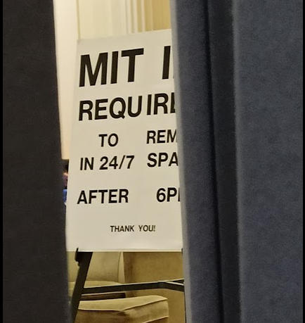I spent the next 2 hours scrambling around campus, to various study halls, gyms, dining rooms, and event sport fields, looking for another place that was open 24/7 where a student without ID could sleep.
When 8:30pm comes around, students were outside enjoying delicious boba and the smell of salty grilled sandwiches fill the air. As for me, the sights and smells were a mockery of my current predicament. I had a few hundred dollars and my credit card in my wallet incase of emergency, but my own pride did not permit me the freedom to enjoy the street foods as I grow more and more desperate to find shelter for the night as the sky slowly darkens.
Standing outside the largest building at MIT ("The Infinite") underneath a pitch black sky, I was contemplating tossing my pride aside and go book a hotel. Just then, two approachable looking students walked outside the building to return to their dormroom, talking excitedly with each other about their plans for tomorrow. "I'll try just one more time", I thought. "It was late and staying outside in freezing temperature could be fatal, If they reject me then I'll book a hotel and try again tomorrow"
I approached the two guys and asked, with obvious desperation in my voice, "Are either of you willing to let me sleep in your dorm room? I am from out of town and I don't have a place to sleep for the night" One guy completely ignored me like I was a dirty vagrant, but the other looked at me, pausing for a brief second, let out a laugh, and jovially said, "I can't let you in the dorms, but there is a common room inside the building behind us that may let you sleep overnight. There are couches and bean bags to sleep. It's call the 'Banana Lounge' because there are free bananas in the room for student to snack on while studying. I have to go but ask someone inside if they'll show you the way."
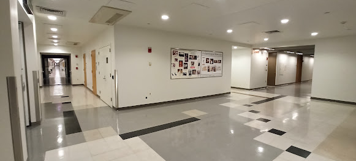The building behind us, just like most other buildings at MIT, were locked with a smart card reader. Fortunately, one of the three doors were slightly propped open and I could walk inside. Getting inside the building is only the first step though, I needed to find one room along 4 corridors that seem to go on endlessly (It is literally named the "Infinite Corridor") Fortunately, it seems like everything finally fell into place. Barely 2 minutes has passed after walking down one corridor, I encountered a student walking toward me holding the largest banana I had ever seen. I asked him for direction to the Banana Lounge and at last I found my sanctuary.
The banana lounge may not be as luxurious as a hotel or as spacious as an Airbnb, but for someone who had spent the last 3 hours desperately scurrying around campus to find a place to sleep, the small hard sofa felt like the coziest bed in the world, and about an hour later I managed to have my first sleep of the 100 hour challenge.
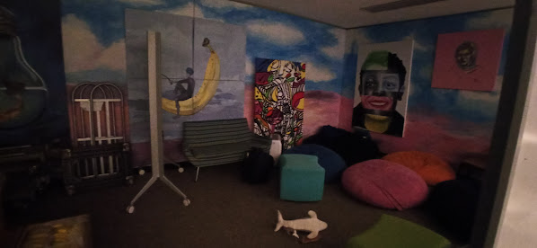The following morning I woke up at 5am to a completely empty banana lounge and explored the soundless infinite corridor (the long narrow hallway gets very scary in the middle of the night with not a soul in sight).
I brushed my teeth in the bathroom, tailgated a student into the gym for a quick shower, and took the subway to a nearby gaming convention where I spent most of the day working and playing.
Returning to the infinite building around 7pm, I was ready to once again rest my head at the banana lounge and sleep, but upon approaching the main entrance, I quickly discovered that the glass door that was propped open yesterday was shut tight today and would only open whenever a student tapped their key card on the smart reader. So I went around the building to look for a side entrance. While walking around the back of the building, I saw a Laos woman in her 50s striding toward the building so I approached and ask if she was a professor at MIT. She told me that she was a cleaner and she is still learning English, and so I followed her into the back entrance while chatting about grammar rules. Once inside, I went directly into the banana lounge and slept on the black bean bag which was much softer than the sofa, dozing off contently as some MIT students were discussing their weekend plans.
On Friday, I woke up early again to explore more of MIT, took the subway to Harvard university, look at local art exhibits, and returned to the Banana lounge around 9pm (the front door to the building was once again propped open). Once inside, I saw a man in his 50s walking around looking at the various posters on the wall. He was a very talkative man and could speak about any topics for hours. I told him that I came from Georgia and is only here for 5 days to attend a convention, finding it less costly to sleep in the Banana Lounge than in a hotel. He narrated his life story going through many homelessness and hitchhiking situations and after about 3 hours of chatting into 1am in the morning, we exchanged numbers and as he walked out the door to return to his apartment. He left me with a casual remark while exiting "If you ever get bored of sleeping here, just give me a call and we can talk more at my place".
Another student was studying in the room with us, and after the chatty man left, he came over to warn me that the guy looked like he was homeless and mentally disturbed for going into a university late at night and talking for hours. I kept both the student's warning and the man's offer to sleep at his place in mind as I doze off to sleep on the third night of the trip.
Did I take the chatty man up on his offer to spend the night in his apartment? Find out in the next module:What if I slept with a serial killer?

What if I slept with a serial killer?
What if you decide to spend the night with a man whom you had only met the day before without knowing much about his past? Read more
 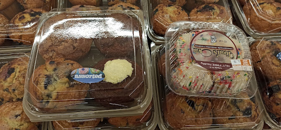
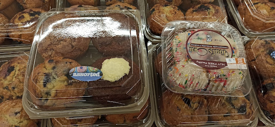
 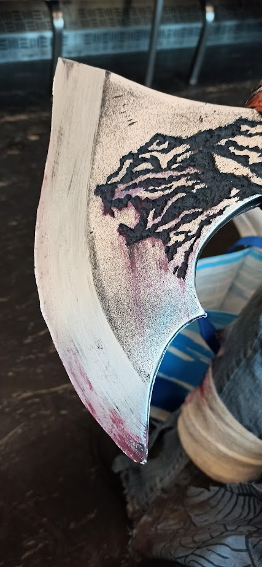
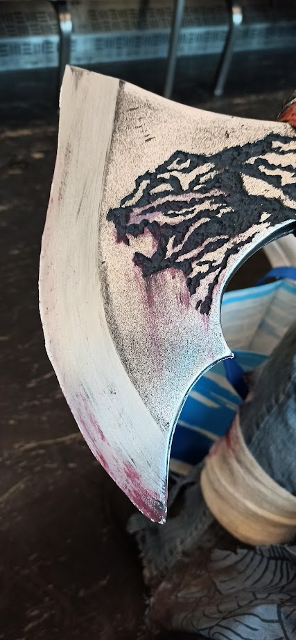
 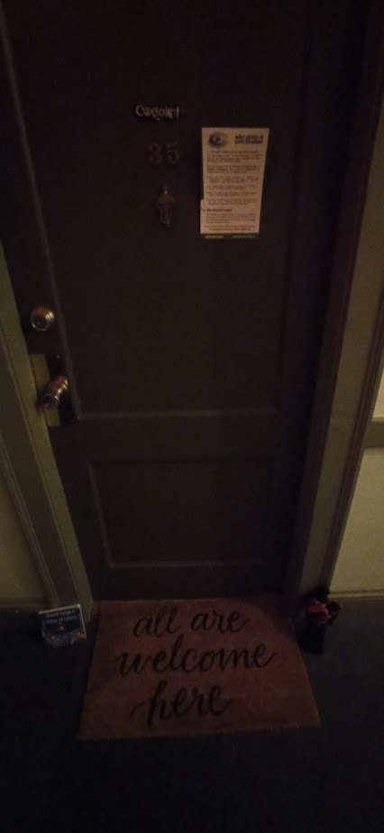
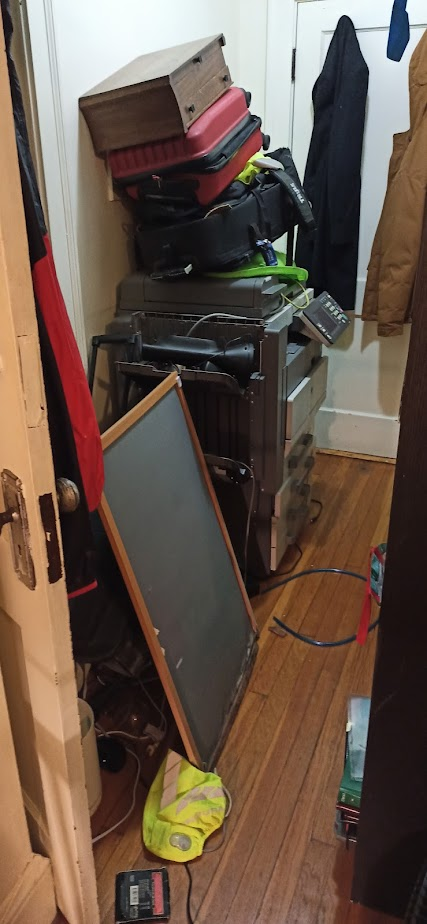
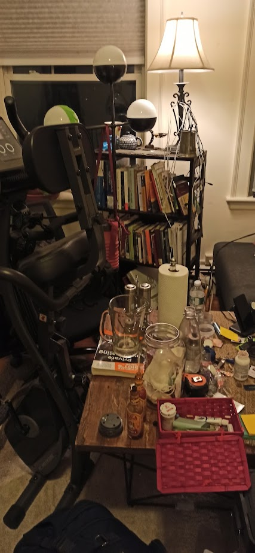
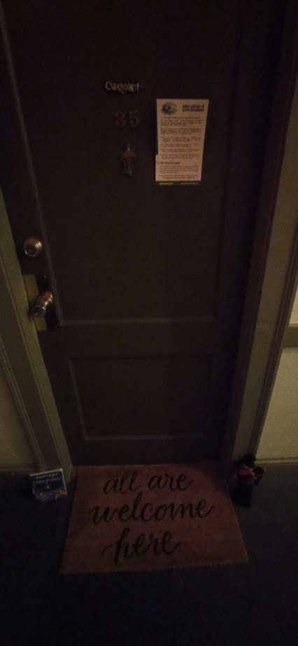
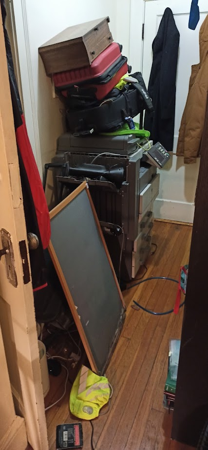
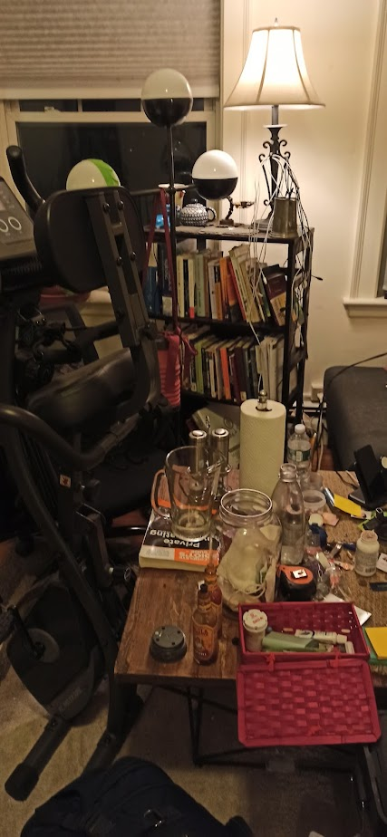
This is a continuation of "What if I was homeless for 100 hours".
I drank a lot of water last night while chatting with the man in his 50s so I woke up at 5am to go to the restroom. When I returned, the door to the banana lounge was locked with my backpack inside. The student's warning immediately popped into my mind and I feared that the man may have been a thief who took off with my belongings and locked the door. I patrolled the area for about 20 minutes before seeing a cleaner coming out of the lounge. I rushed over and made brief small talks as he held the door open for me to enter. After enjoying a cup of coffee in the lounge, I gathered my belongings and starts my 4th day in Boston on 4 hours of sleep.
As it was still early in the morning, I set out on a mini challenge to take the Boston 'T' Subway to the end of the line, walk straight in one direction for an hour, and see where I end up. Aside from a wonderful walk in the cool cloudy weather, I did not encounter much in this remote area except for a few stores selling delicious and cheap cookies.
On the subway ride back to the gaming convention center, I met a novice cosplayer wearing a very gruesome homemade killer rabbit outfit and I chatted with her about her craft, animatedly going over each skillful details from how she made her mask to the rustic shavings on her axe and the stitches and drips of bloods on her gory jeans. Little did I know that in a little over 12 hours I would experience the most bloodcurdling moment of my 100 hour homelessness challenge.
I spent the rest of Saturday at the convention center attending event panels and playing board games until 9pm. The moment I stepped outside, the cool weather from morning was no more, replaced with a dark and windy rainstorm. The wind was so intense that when I tried to open my umbrella, the long rib immediately snapped back to the closed position, refusing to provide cover for me amidst the pouring rain. As I stood there in the storm trying to quickly shove the broken umbrella back into my bag to free my hand, the backpack zipper fell apart. Worst yet, it was 9pm on a Saturday. "What if I went back to MIT, the door is shut tight, and there is no students for me to tailgate into the building because it is Spring Break weekend and all the students went home?"
The triple jeopardy of a heavy rainstorm, a broken umbrella, and fear that I would be stuck outside the walls of MIT in the rain overwhelmed my mind. And so with the mental state of a tenant evicted from his home without warming combined with the adrenaline fueled by fear of realized homelessness, I marched inside the convention center, eyes of a hawk looking for a hiding spot. I approached 3 different groups of employees and convention attendees who unanimously and without remorse rejected the desperate 20-year-old of a place to sleep.
Left with no alternatives, I picked up my phone and dialed the chatty man I met last night in the Banana Lounge. He answered the phone and gave me his apartment address which was about 40 minutes away by public transport. I took the subway half-way and a bus for the remaining duration. While on the bus, anticipation and terror fills my mind. I have only talked with him for 3 hours, "Am I about to trust this stranger with my wellbeing while I sleep?" I hastily went online to dig up as much information as I could find about the stranger. He did not have a major online presence and what little I did find could have easily been a fabricated story. What was even more chilling, his rare last name is the same as the Jigsaw Killer.
"What if I went to his apartment, close my eye, and could never wake up?" I am in a state with no friends or family, and not a single person knew my whereabouts aside from the chatty stranger. I was so afraid that as I was sitting on the bus going to his address, I typed up a goodbye note to my family and hit sent to a distance friend. My rationale for sending the note to a distance friend is that he would not be able to stop me, and if I did not respond to him the next day, he would be able to the number I gave him so at least my family could contact the authorities to retrieve my body. He tried several times to stop me, but "courage is being afraid and doing it anyway". I wasn't sure at the time if it was courage or stupidity masked by adrenaline, but my gut feeling told me to trust my research and my judgement of character. I stepped off the bus, walked down the dimly lit road, approached the apartment entrance, and gave the stranger a call.
It was a very large apartment that had about 50 rooms equipped with individual bathroom and kitchen but as the stranger guided me through the building to his room, I did not see or hear any other tenant (maybe because it was 11pm and everyone was deep asleep). He led me to his door with a sign that had characters I could not recognize as if he was part of some secretive cult. I stayed silent, on high alert throughout his apartment tour.
We chatted for the next hour, my answers still reserved and skeptical. He told me about the poverty-stricken condition of his dimly-lit neighborhood and how there were many people homeless around the city. The stranger rambled on about a nearby house that burned down last week, people getting food poisoning from dirty water, and his own struggles with painkillers as an elderly man living alone. "It's getting late so I need to get some sleep, I'll show you the painkillers tomorrow" said the stranger. "Such morbid subjects" I thought to myself, still keeping my responses brief to his rambling. He offered me a glass of water from the tap, I accepted the glass politely, took a sip, and excused myself to the restroom. Inside the restroom, cluttered like the living room, were letters from an organization to help the impoverished population in Boston. I stepped outside of the restroom, the stranger were preparing for bed. Saying goodnight, Kramer went inside his bedroom, and then I heard a familiar click.
I went to investigate the source of the noise, and confirmed that the man has locked his bedroom door. It seems that he was also watchful of the stranger sitting on the other side of the wall. I observed my surrounding one last time, cautiously walking around the living room and looking for any signs that the man was part of a gang, any sign to confirm the sinking feeling that I might be kidnapped or killed tonight. But all I find were philosophical and historical books about social and economic issues and an ID of a man who had a very eventful life. I dozed off to sleep.
The next morning I woke up once again at 5am without an alarm. Thankful for still being alive, I hastily gathered my belongings and exited the apartment. Immediately, I saw firsthand many of what Kramer had said the previous night. There were two drug-addicted vagrants sitting right outside of the train station, calling out at me as I approached the station door. As I stepped closer, the door was locked and there was still 45 minutes before the station opens for the day. I kept my distance from the vagrants and spotted a bulky clean-shaven man jogging down toward the station. I stepped toward his direction for safety. David was a 51-year-old divorced monk who practiced linguistics, Judo, and Hindu mantras. People from Somerville were very talkative and within 1 hour I had learned that David used to be physically tortured by polices from Belarus and that he think people on their phones, beggars, and prostitutes, are literal demons walking among us (I later met a junkie prostitute on my way to downtown).
The moral of this adventure? Why did I feel safer at the prospect of sleeping with a college student than a man in his 50s? Why did the monk feel safe talking with a me while blatantly calling people within 30 feet of us demons? We all have different life experiences, and sometime we are afraid to approach those who experienced life a different way from us, but rather than focus on the difference, we should look at how much we are alike. Those are the things that made us human.
What if I learned to sail across the ocean?
Embarking on a journey to master sailing and navigate the vast, unpredictable open ocean. Read more
The idea of being solely reliant on the wind and my own navigation skills was both terrifying and exhilarating. I spent months learning the basics, from tying knots to understanding charts, before joining a crew for a transatlantic voyage. There were days of calm, breathtaking sunsets, and challenging storms that tested every ounce of my resolve. It was an incredible lesson in patience, resilience, and the sheer power of nature. The sense of accomplishment upon reaching the other side was unparalleled.
Living at sea for weeks on end forced a complete re-evaluation of necessities. Every sunrise and sunset was a masterpiece, and the stars at night were unlike anything seen on land. This experience instilled a deep respect for the ocean and a profound understanding of self-reliance, proving that true freedom can be found far from shore.
What if I tried living entirely off-grid for a month?
A month-long experiment in complete self-sufficiency, disconnected from modern utilities. Read more
This "what if" was a profound test of resourcefulness. For thirty days, I relied on solar power, collected rainwater, cooked over an open fire, and grew my own food. It was challenging, humbling, and surprisingly liberating. I learned invaluable skills, appreciated simple comforts more deeply, and developed a profound connection with the natural world. It taught me how much we rely on infrastructure and how capable we are when pushed to adapt.
The initial days were tough, filled with trial and error, but a rhythm soon emerged. The quiet of the wilderness and the satisfaction of self-provisioning were incredibly rewarding. This experience truly redefined what "essential" means and ignited a passion for sustainable living beyond the month-long challenge.
What if you share your story with the world?
You've read about my "what ifs," now it's your turn. We all have unique skills, passions, and dreams that often stay hidden. Imagine the impact you could make, the joy you could bring, or the change you could inspire by simply stepping forward. What's that one thing you've always wanted to do, that talent you've been nurturing in secret? Don't let it remain a "what if." Take the leap!
Contact Me
Have your own "what if" story to share? Want to suggest a new adventure for me to tackle? Or perhaps you're ready to share your talent with the world and need a little encouragement. I'd love to hear from you!